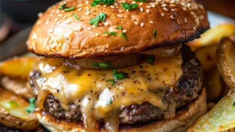

Home
Cheeseburger's Recipe

Recipe for a Classy, Cheesy and Juicy cheeseburger
Ingredients
- Meat(ground chuck): half a pound
- Seasoning: 1 tsp salt, 1 tsp freshly ground black pepper, 1 tsp garlic powder
- Cheese: 2 slices of american cheese
- Bun: 2 brioche or sesame seed hamburger buns
- Toppings :Shredded lettuce, sliced tomato, sliced red onion, dill pickles
- Secret Sauce : 1 tbsp mayonnaise, half tbsp ketchup, quater tbsp mustard
Steps
- Form the meat into a flat patty and sprinkle both sides with salt, pepper, and garlic powder.
- Cook the patty in a hot pan for 3 to 4 minutes until it gets a brown crust.
- Flip the burger, put the cheese on top, and cover the pan with a lid for 2 to 3 minutes to melt it.
- Remove the burger, toast your bun in the hot pan for 1 minute, then add your sauce and toppings.